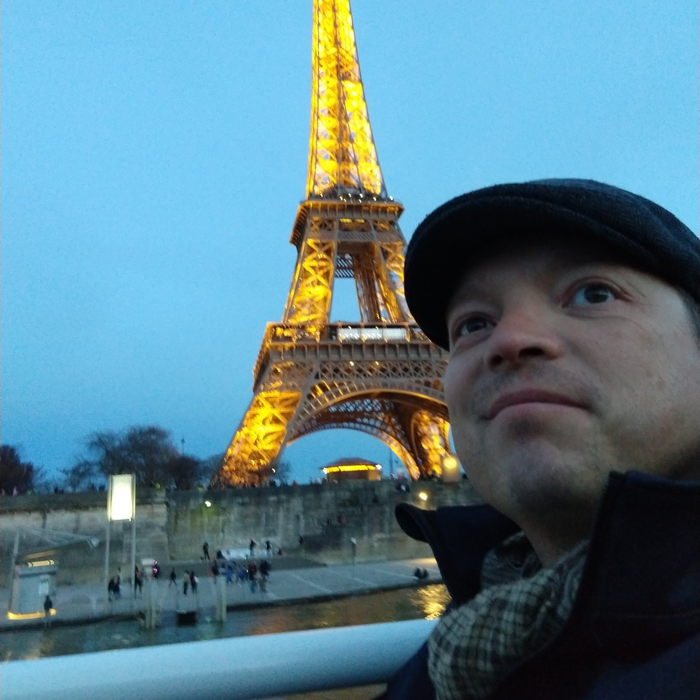

Chad Smith
Full-Stack ASP.NET Web Developer and GIS Analyst
I have a solid foundation knowledge of designing and developing full-stack web applications using .NET framework. I have 10 years experience as a GIS analyst, 6 years of SQL Database experience, and 4 years of small team leadership. My area of focus is spatial statistics and predictive analysis. I manage small teams in daily operations through planning, execution, reporting, and documentation.
Front End
HTML5, JavaScript, jQuery, jQueryUI, CSS3, Responsive/Mobile Web Development, Bootstrap
Middle Tier
Visual Studio 2015, C#.NET, ASP.NET, LINQ, MVC, Entity Framework
Back End
ADO.NET, SQL, SQL Server, SSMSE
GIS
ArcMap/ArcDesktop, ArcGIS Server, ArcGIS Online, ArcGIS SDE, and ArcGIS Pro, Leaflet.js
Centriq Career Course
Leawood, Kansas 2018
Solid foundation of designing and developing full-stack web applications using .NET framework.
- HTML 5, CSS 3, JavaScript, BootStrap 3
- C#, ASP.NET, MVC 5, LINQ
- SQL, MSSQLSS
- Developed multiple side-projects during training.
- Coding in a team environment.
ESRI
Redlands, CA 2015
ArcGIS for Server: Site Configuration and Administration. Learned to plan, configure, deploy, and manage an ArcGIS for Server system, that enables GIS content sharing across enterprise systems.
University of North Texas

Denton, Texas 2009
Bachelor of Science in Geography. Minor in English Literature.
I focused on Urban Geography, Human Geography, and Data Modeling/Spatial Statistics. Recognized for excellence during UNT Scholar's Day 2008.
Division G2X

35th Infantry Division, Kuwait
May 2017 to April 2018
Served as the Subject Matter Expert for all matters related to Human Intelligence Collection and Counter-Intelligence for the Division Commander (Major General Command). Served in a senior field grade officer position (executive / director-level) as a junior non-commissioned officer (junior manager / team leader).
- Coordinated the day-to-day operations, including planning, operational control, and reporting.
- Mentored subordinates and provided quality assurance for all products.

Criminal Intelligence Analyst

MOARNG - Counter-Drug Program, Overland Park, Kansas
October 2016 to May 2017
- Supported federal criminal investigations, with a narcotics nexus, through data-mining and research of individuals.
- Created maps, link analysis charts, event-timeline products, and written reports in support of criminal prosecutions.
- Used Cellebrite products to collect cell phone evidence.
- Certified Cellebrite Operator and Certified Cellebrite Analyst
GIS Analyst 4

Black & Veatch, Overland Park, Kansas
February 2015 to April 2016
- Supported multiple fiber optic construction projects and internal teams with GIS data management and analysis for the Telecommunications Division.
- Used SQL and data management skills to develop and manage large databases and geospatial datasets.
- Created map web applications using ESRI’s web API for ArcGIS Server.
- Introduced key efficiencies in data management by migrating data from stand-alone file systems to full SQL DB, reduced the opportunity for production errors and increased data sharing.
- Implemented and modified data schema for multiple new datasets and integrated new datasets with other key industry standard data schemas.
Human Intelligence Collector Team Leader
504th BfSB, Camp Bondsteel, Kosovo
December 2013 to October 2014
- Supported the Brigade Commander’s Priority Intelligence Requirements through Military Source Operations and Strategic Debriefing.
- Led and mentored a 4-person team in daily operations to include: pre-mission planning, operations, reporting, record keeping, and leadership briefing.
- Communicated effectively with multiple non-Native English speakers from varying backgrounds and cultures.
- Successfully communicated using a translator for some non-English speaking audiences.
Curriculum Instructor 
CGI Federal, Fort Leavenworth, Kansas
February 2013 to October 2014
- Trained Research Managers for the Human Terrain System. Developed and taught GIS-based courses for adult learners using the ADDIE methodology.
- Successfully communicated very technical subject matter to non-technical audience of learners
Law Enforcement Analyst

BAIR Analytics, INC, Highlands Ranch, Colorado
August 2012 to February 2013
- Provided client support for law enforcement mapping service.
- Created SQL translations from client's Records Management System schema to internal DB schema.
- Trained clients to use software and web-based products. Conducted training in person, via telephone or Skype, and through webcasts.
- Conducted advanced GIS analysis for selected clients.
Research Manager (GS-13)
Human Terrain Systems (US Army TRADOC G2), Kabul, Afghanistan
May 2011 to June 2012
- Coordinated research from 20+ teams for a military program based in Afghanistan.
- Created geospatial intelligence products from research materials. Coordinated requests for surveys between Social Science directorate and field teams.
Senior Human Terrain Analyst

Courage Services, MacDill AFB, Florida
October 2010 to May 2011
- Created written reports for various Intelligence Preparation of the Battlefield products for SOCOM personnel.
- Conducted in-depth research and analysis of specific regions throughout the world.
- Created spatial datasets for analysis by proprietary software tools.
Senior Corporal of Police
Dallas Police Department, Dallas, Texas
September 2000 to August 2009
- Served as patrol officer, bicycle officer, crime analyst, analyst detective, field training officer.
- Developed GIS methods to identify critical need areas for police services and track changes in those areas.
- Used SQL and data management skills to improve analysis capabilities.
- Improved data geocode matching rate from 68% match to over 99.999% for over 15 million records
Foriegn Language
I read and write French at a conversant or literate level. I speak French at an elementary or conversational level. I learned French in adulthood. I used the Memrise application to learn vocabulary and grammar rules. I also subscribed to several YouTube channels to learn idiomatic French and to become more comfortable with native speaker accents. I also read (mostly) Le Monde to keep current on current events and expand my vocabulary. I recently spent a week in Paris. I can proudly say that my French was adequate to carry on most day-to-day activities, but was sadly inadequate to file a police report (I was robbed.). C'est la vie.
- Intermediate written French, Novice spoken French.
- Experience working with translators for day-to-day operations.